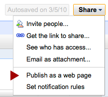
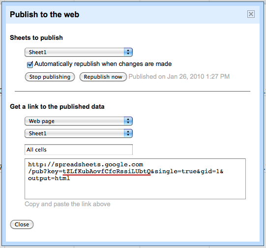

TableSetter – Version: 0.2.7
TableSetter is a Ruby app that provides an easy way to present CSVs hosted locally or remotely (e.g. on google, etc) in custom HTML. TableSetter in the wild: a list of all stimulus projects from last year, the stimulus spending progress, or a list of failed banks due to the last recession.
Each table is filterable and sortable on multiple columns. Also each column can be formatted in one of many different styles. In production mode, TableSetter provides valid expires headers and can be coupled with an upstream cache like Rack::Cache or varnish for speedy presentation.
Install TableSetter through rubygems:
gem install table_setter
or from the source files:
git clone git://github.com/propublica/table-setter.git
cd table-setter
rake install
After you've installed the gem you'll have a new executable: table-setter. You can view the subcommands available by typing table-setter --help. To set things up you'll need to run it with the install command to install the configuration files and ERB templates into a directory.
table-setter install path/to/directory
To start the development server run:
table-setter start path/to/directory
Go to development url, http://localhost:3000/ and you'll see a list of the example tables. You can peruse the examples here.
The table-setter command responds to three subcommands:
- install <DIRECTORY> installs the tablesetter files into the current directory or one you specify.
- start <DIRECTORY> starts the development server so you can preview your tables before deploying.
- build <DIRECTORY> -p <PATH> builds a static version of the tables, <PATH> is the relative path where you want to place the tables on your webserver.
See Deployment
The configuration folder contains the javascripts, stylesheets, view templates (written in ERB), rackup file, and most importantly the configuration files for each table.
You'll put table definition files in the table directory, your javascript in public/javascripts and css in public/stylesheets. You can make most HTML customizations in views/layout.erb.
The config.ru file is a rackup file that instructs the webserver to start the TableSetter application and serve the assets contained in the configuration folder. In most cases you'll want to use apache and passenger (see Deployment for details).
In public you'll find the static assets required for the look and feel and functionality of the table:
- The images directory contains the small images
 and
and  which show the user the sorting direction of a given column.
which show the user the sorting direction of a given column.
- The javascripts directory contains scripts that power the dynamic functionality of a table. Each file depends on jQuery:
- application.js dispatches to the other javascript files to render the table at load time. It also defines the column highlighting function.
- jquery.tablesorter.js the jQuery tablesorter plugin that handles the dynamic sorting by column.
- jquery.tablesorter.pager.js the tablesorter pager plugin to tablesorter that provides the paging functionality.
- jquery.tablesorter.multipagefilter.js a custom plugin that allows for searching across multiple pages
- The stylesheets directory contains application.css, the TableSetter stylesheet. Each style is prefaced with #tablefu so you should be able to include your organization's css on the page without affecting the tables.
The tables directory contains yml configuration files for each of the tables you want to deploy. By default it contains:
- example.yml contains most of the simple options in a TableSetter file.
- example_local.yml and example_local.csv shows how to build a table from a local file. It also is hard_paginated (see A Table Setter File).
- example_faceted.yml is an example of faceting.
- example_formatted.yml and example_formatted.csv shows how to apply formatting to a column and a group of columns.
The views directory contains the ERB templates needed to render the table pages and index page.
-
404.erb and 500.erb render when a table is not found or a server error occurs, respectively.
- layout.erb contains the basic frame of the page. You should place most of your customizations here. If you'd like to add custom html, place it above or below the <%= yield %> tag.
- index.erb renders the table list for the root path of the app.
- table.erb renders an individual table. You shouldn't have to tweak this much, if at all.
Each TableSetter file is written in YAML and outlines the the display options for a particular table. The filename dictates the path where it will appear (e.g. a config file named example.yml will appear at http://host/example). Initially TableSetter installs a few examples to get you started (see above).
Each table setter file must begin with a table: declaration, and it's important to note that whitespace matters. For example consider this csv:
Bank,Spent,Funds,Link
McDuck Bank,100000,10000000,http://diveintomoney.com
Potter Savings and Loans,1100,1000000,http://angelsandwingsmrstewart.com
these are the example options in a TableSetter config file:
table:
title: The title of the table
# google_key:, file:, or url: define how a table is loaded.
# only one is necessary
file: loads a local CSV file from the /tables directory.
url: will load a CSV file from an external server, and
google_key: is a google key url from an external google doc (see note).
deck: A HTML string describing the table, appears above the table itself.
footer: A HTML string for notes/caveats etc. Appears below the table.
column_options: # Defines a hash of options that are passed onto TableFu
columns: # A list of columns to include, for example:
- Bank # would only include the bank column in the table
style: # A list of style declarations by column, for example:
Bank: 'text-align:left;' # would left-align the text in the "Bank" column.
sorted_by: # Defines the sort order and column to sort by of the table.
Bank: ascending # would sort by the Bank column in ascending order
total: # Declares which columns should have a totals row.
['Funds', 'Spent']
formatting: # Defines which of the TableFu formatters to apply to a column.
(%) Spent: bar # applies the bar formatter to the '(%) Spent' column.
Link: # Creates a meta column form two other columns
method: link # describes the formatter to use
arguments: ['Bank', 'URL'] # Combines Bank and URL as arguments
faceting: # Describes the faceting, or grouping, to apply to a table
facet_by: Bank # groups the records by bank name
hard_paginate: true # Dictates that the table should be spread across multiple pages
# can't be used with faceting, and disables the user filtering
per_page: 250 # Instructs TableSetter to only page by 250 rows.
live: true # publishes the table in the index page. Note that even if live is
# set to false the table is still accessible directly.
NB: A Note About google_key
At ProPublica, we mainly use TableSetter to format public google spreadsheets. You can find the google_key by publishing a spreadsheet as a webpage:

and in the dialog box, the google key is here:

Passenger
(Cribbed from the excellent passenger documentation.)
If you're familiar with deploying a Rails application under passenger, not much changes when deploying a rack basked application. TableSetter includes a config.ru file that should be sufficient under most situations. You'll need to create a tmp directory inside the TableSetter directory on the server. The following virtual host configuration will deploy TableSetter directory:
<VirtualHost *:80>
ServerName www.yourdomain.com
DocumentRoot /path/to/table-setter/public
</VirtualHost>
If you want to deploy TableSetter under a sub URI you should symlink the public folder to a directory in the document root:
ln -s /path/to/table-setter/public /docroot/tables
and change you're apache config to reflect the sub URI:
<VirtualHost *:80>
ServerName www.yourdomain.com
DocumentRoot /docroot/tables
RackBaseURI /tables
</VirtualHost>
Caching
You probably don't want to parse a remote CSV file on every request in production, so the config.ru file contains directives to enable Rack:Cache a simple reverse proxy cache. If your web server is not behind an upstream cache you'll want to enable it by uncommenting the required lines.
You'll also want to enable the TableSetter:App expire time by uncommenting this line:
TableSetter::App.cache_timeout = 60 * 15 # 15 minutes
That line dictates the max age of a request and you'll want to tweak it depending on how frequently changed your tables will be and how many users you expect. If you want to define any TableFu formatters you should do so in config.ru.
Static
You can also use to pre-build table-setter your tables as html and upload the built files to your web server. You can build them using the table-setter command:
table-setter build path/to/table-setter/directory -p path
The build tables will be placed in the out directory inside the configuration directory.
The -p flag dictates where on the server relative to root you'll install the files. If I want my tables to appear under the tables/ directory on my site, I'd run:
table-setter build path/to/table-setter/directory -p tables
And upload the files in the out/tables directory.
In order to use table-setter as a Rails, you'll need to install the table-setter-generator gem. Once you've done that you'll be able to run:
script/generate table-setter
In your existing Rails app path and it will install the TableSetter routes, controller, views, and Table model.
Jeff Larson (Maintainer),
Brian Boyer,
Scott Klein,
Mark Percival,
Charles Brian Quinn,
Christopher Groskopf,
Ryan Mark,
Ben Welsh, and
James McKinney.
0.2.7
404 and 500 pages have no layout now, please update your templates accordingly.
0.2.6
Fixed a bug in table-setter start thanks to John Keefe
merged in some more changes from James McKinney
and added a lib/formatters.rb in the template, which is the standard
place to stash your custom formatters. Also, the build command
now errors loudly and exits if there's an error.
0.2.5
Loads of bullet-proofing from James McKinney and js fixes from Ben Welsh, you'll want to re-run table-setter install to grab the changes, as with previous releases.
0.2.4
Fixes encodings issues and the FasterCSV name change for ruby 1.9.
0.2.3
JavaScript fix for table-sorter.
0.2.2
Fixing long standing bug with empty prefixes in the build command.
0.2.1
Table Urls have an optional trailing slash. Fixes a bug in 0.2.0
0.2.0
It's recommended not to use this version. Backwards incompatible change: Table urls no longer end in a trailing slash. Please modify the url_for calls in your templates to reflect the change.
0.1.11
JavaScript Fixes. Note: You'll need to delete the javascript's folder in the config directory and run table-setter install to grab the changes.
0.1.10
New formatters via Ryan Mark.
0.1.9
No Op.
0.1.8
Bunch of fixes from Ryan Mark, and beta markdown functionality. Once Markdown is tested we'll release 0.2.0
0.1.7
Bugfix to the build command to place assets in the right place
0.1.6
Fix in build_assets in command.rb, via Christopher Groskopf
0.1.5
Bugfixes.
0.1.4
Javascript fixes and thin added as a dependency.
0.1.3
Initial release.
Copyright (c) 2010 ProPublica
Permission is hereby granted, free of charge, to any person obtaining
a copy of this software and associated documentation files (the
"Software"), to deal in the Software without restriction, including
without limitation the rights to use, copy, modify, merge, publish,
distribute, sublicense, and/or sell copies of the Software, and to
permit persons to whom the Software is furnished to do so, subject to
the following conditions:
The above copyright notice and this permission notice shall be
included in all copies or substantial portions of the Software.
THE SOFTWARE IS PROVIDED "AS IS", WITHOUT WARRANTY OF ANY KIND,
EXPRESS OR IMPLIED, INCLUDING BUT NOT LIMITED TO THE WARRANTIES OF
MERCHANTABILITY, FITNESS FOR A PARTICULAR PURPOSE AND
NONINFRINGEMENT. IN NO EVENT SHALL THE AUTHORS OR COPYRIGHT HOLDERS BE
LIABLE FOR ANY CLAIM, DAMAGES OR OTHER LIABILITY, WHETHER IN AN ACTION
OF CONTRACT, TORT OR OTHERWISE, ARISING FROM, OUT OF OR IN CONNECTION
WITH THE SOFTWARE OR THE USE OR OTHER DEALINGS IN THE SOFTWARE.